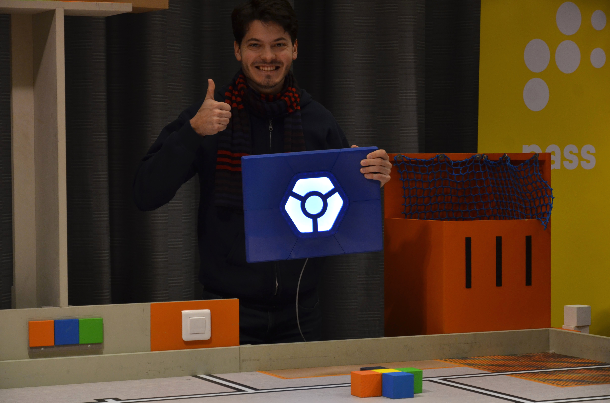

Join us for 2022!

Nous sommes toujours à la recherche de nouveaux membres pour travailler sur nos robots!
Peut importe que tu sois plus mécanique, électronique ou programmation, ou même que tu ne le sache pas, il y a une place pour toi! Eurobot est une aventure incroyable, tant humainement que techniquement. If you don't speak French, that's fine too!Intéressé? Tu peux lire plus d'info sur le club.
Eurobot 2019: Atom Factory

We started the season by participating in the Belgian Eurobot competition. Then, we played the Swiss national contest where we were placed 7th. The goal of this edition was to make robots collect and discover atoms. The robots needed to complete following tasks:
- Collecting atoms and sorting them by weight.
- Use a particle accelerator to discover a new heavier element.
- Activate an experiment to project an electron.
- Estimate the score achieved by the robots.
More details about the contest in the rules.